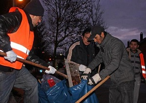

Presse 2013
-
Neujahrsputz der besonderen Art
Daniel Garske (li.) und Muswar Ahmed von der Reformgemeinde Ahmadiyya Muslim Jamaat wollen am 1. Januar mit weiteren Gemeindemitgliedern in Buer Straßen vom Silvestermüll befreien. (Foto: Martin Möller)
mehr » -
Als Zeichen der Integration
Die Mitglieder der islamischen Reformgemeinde »Ahmadiyya Muslim Jamaat« säuberten den Berliner Platz von den Überbleibseln der Silvesternacht. (Foto: son)
mehr » -
Neujahrsputz am Main
Den suchenden Augen der fleißigen Helfer entgeht nichts. (Foto: Oeser)
mehr » -
Deutsche Muslime befreien Deutschland vom Silvesterschmutz ehrenamtilich.
Youtube » -
Fleißige Putzaktion am Neujahrsmorgen
Die Mitglieder der Gemeinde Ahmadiyya Muslim Jamaat beseitigten die Innenstadt am Sonntagmorgen vom Silvestermüll. (Foto: Birgit Küchen)
mehr » -
Den eigenen Egoismus bekämpfen
„Keine Arbeit ist zu niedrig“ – Neujahrsputz der Hattersheimer Ahmadiyya-Gemeinde
mehr » -

Mainzelmänner am Neujahrsmorgen
Sie rücken aus, wenn andere noch in den Federn liegen: Die Ahmadiyya Muslim Gemeinde, Naturschützer und ein Männerkreis sammelten am Neujahrsmorgen Böller, Raketen und Flaschen auf.
mehr » -
„Wir sind Rüsselsheimer“ - Ahmadiyya-Gemeinde reinigt Plätze von Silvestermüll
Mitglieder der Rüsselsheimer Ahmadiyya-Muslim-Gemeinde haben am Neujahrstag im EKZ Hassloch Nord aufgeräumt. (Foto: Detlef Volk)
mehr » -
Putzkolonne im Dienste Allahs
Flüchtling Goher Butt hat in Dresden eine zweite Heimat gefunden. Dafür bedankt er sich mit einem Einsatz auf dem Neumarkt. (Foto: S. Ellger)
mehr » -
Muslime sorgen für einen sauberen Start
Heimliche Helfer: Während andere noch schlummern, räumen die ehrenamtlichen Straßenfeger abgebrannte Böller und Raketen weg. (Foto: U. Resch)
mehr »
{kind=link}
{kind=link}
{kind=link}
{kind=link}
{kind=link}
{kind=link}
{kind=link}
{kind=link}
{kind=link}